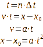
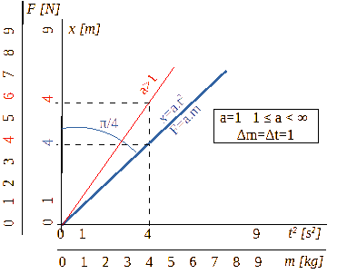
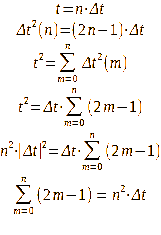

Revisión Principia→ La multiplicación natural.

La función de iterador I es aquella que aplicada a la expresión sumatoria del producto, devuelve el valor máximo de las iteraciones requeridas, el iterador.
El producto o multiplicación natural, la expresión de una relacion proporcional lineal, es el resultado de sumar tantas veces como indica el iterador al otro factor que denominaremos sumado. Al ser en último lugar una suma, a todos los sumandos hay que suponerles idénticas o equivalentes unidades y pueden ser las de cualquiera de los dos factores debido a la propiedad conmutativa de dicha operación, que permite seleccionarlos como iterador o sumado.
Magnitud es la expresión numérica de una propiedad de un objeto natural, observable y medible, que se expresa por un iterador indicando el número de veces que contiene a la unidad considerada y que incluye a esta como sumado. En ese contexto y solo en ese es cuando se pueden considerar unidades derivadas por operaciones numéricas entre ellas. La más inmediata, la separación de operaciones entre iteradores y esas unidades que actúan de sumados.
La intuición del ángulo recto, indica que existe una construcción angular y solo una que cumple el teorema de Pitágoras. Es incluso visualmente característica e implica una ausencia de proyecciones entre ejes que forman ese ángulo. Ha sido extendidamente experimentado y es siempre posible esa construcción. Se utilizará para obtener el sistema de referencia.
La intuición de ritmo consiste en afirmar la capacidad del cerebro de considerar ciclos de carácter repetitivo de igual periodo, con mayor o menor precisión. La consideramos una afirmación fruto de interpretación de la evidencia y la sostenemos como principio.
El instante n se define como el evento en que un futuro se convierte en presente y a la vez, ese presente anterior cambia a pasado e implica memoria. Ocurre ante la consecución de una nueva lectura del resultado de una función del tiempo, ante una nueva observación. Su medición es simplemente el conteo y se considerarán como números naturales de base uno. Se supone derivado de la intuición de ritmo. Al presente le llamaremos instante actual.
El tiempo mensurable t se forma con el intervalo entre instantes sucesivos, el cual se considera constante e igual en cada repetición atendiendo a la intuición de ritmo. Resulta de la multiplicación del número de instantes ocurridos por ese valor de repetición considerado. Este valor de repetición se relaciona, entre otras posibilidades, con movimientos espaciales cuyo inicio y final coinciden y hay evidencia suficiente de ello. Se puede derivar por tanto de la apreciación de espacio.

ec.1 Definición de tiempo, velocidad y aceleración
(x→espacio, t→tiempo)
 |
 |
fig.1 Fuerza, espacio y aceleración en sistema cartesiano con eje de abscisas geométrico (potencia dos).
La aceleración de valor uno es la conocida en la superficie de la tierra.
Primera Ley de la Dinámica (Newton)
La fuerza o esfuerzo natural es proporcional linealmente a la aceleración o variación de la velocidad del móvil y a la cantidad de masa que presenta. (Experimentado por Galileo Galilei), no así a la velocidad que se pueda medir, de la cual se deriva el impulso. Sus unidades son las de la aceleración o las de la masa, según se tomen como iterador o sumado.
m a = F – F0 [ s-1 | kg ]
Si m → iterador → [ (kg) s-1 ] ΣF=m.a
Si a → iterador → [ (s-1) kg ] ΣF=a.m
El iterador se considera adimensional en todo caso y por tanto si se muestra su unidad es por consecuencia posterior en caso de distintas unidades para esa dimensión y solo por eso. Por congruencia se tomará la aceleración como iterador, dando por supuesto que la masa responde a criterios de ocupación espacial y por tanto, es primero y existe. En el caso de la expresión del espacio en función de la velocidad y por un razonamiento similar, se considerará iterador a la velocidad.